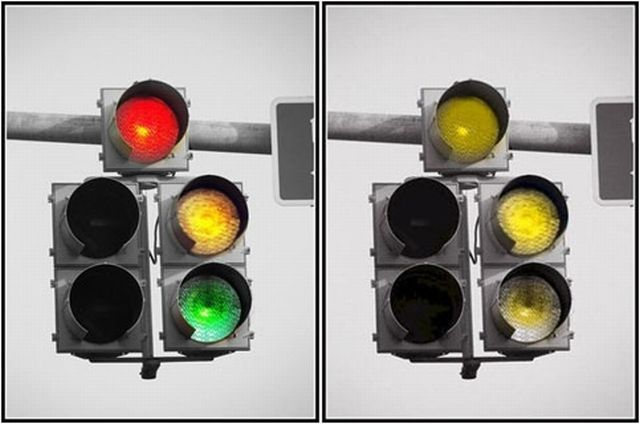

Toggle navigation
Index
First
Previous
Next
Last
Slide 2 of 7
Color Blindness
Deuteranopia – Red-Green Color Blindness (~6% of male population)

More Resources
Microsoft: Can Color-Blind Users See Your Site?
Colour Blind Awareness